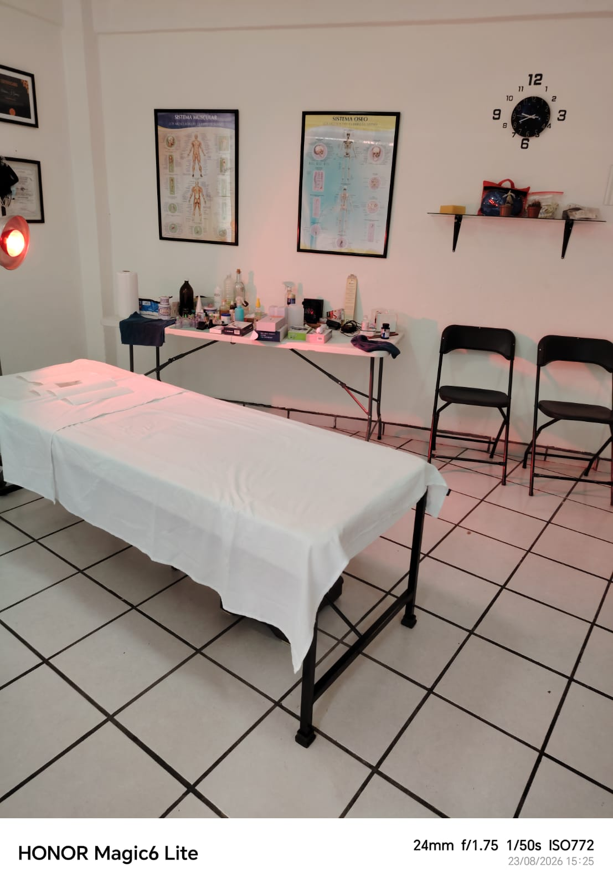
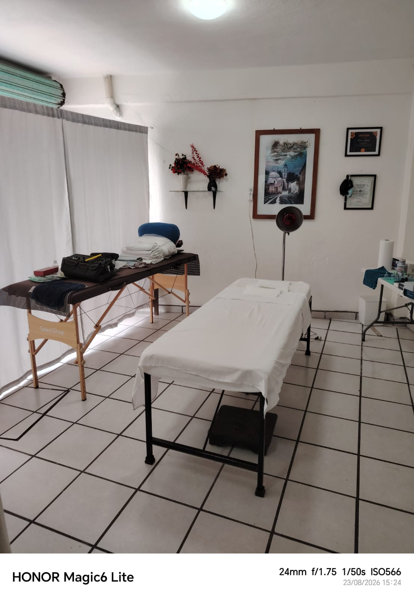
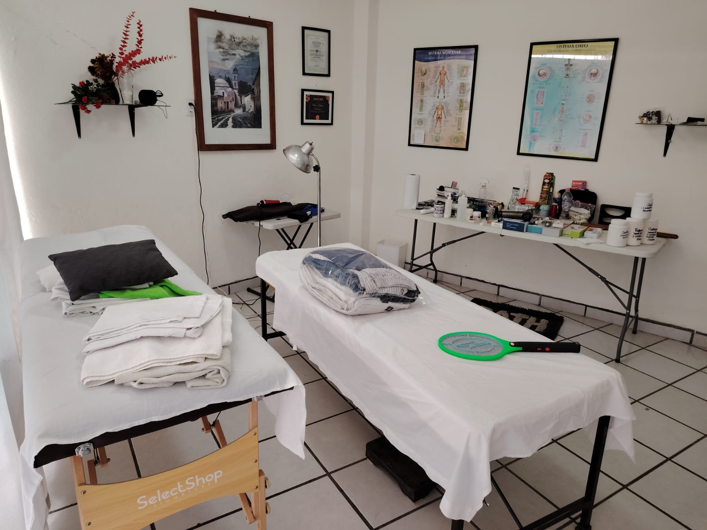

Recupera tu movilidad y vive sin dolor.
En Quiropráctico Cuernavaca corregimos el origen de tu dolor de espalda, cuello y articulaciones con ajustes precisos y sin fármacos. Años de experiencia y técnicas certificadas al servicio de tu bienestar. Primera sesión desde $600.
El dolor casi nunca empieza donde lo sientes… casi siempre empieza en tu columna.
No perseguimos síntomas: localizamos la causa. Con una valoración postural detallada y ajustes quiroprácticos específicos, ayudamos a tu cuerpo a volver a su equilibrio natural.
Ajuste quiropráctico preciso
Técnicas manuales seguras que devuelven movilidad a cada vértebra y liberan la presión sobre el sistema nervioso.
Enfoque en la causa
Analizamos postura, movilidad y hábitos para tratar el origen real de tu molestia, no solo calmarla un rato.
Experiencia comprobada
Años de práctica clínica y capacitación continua respaldan cada sesión. Manos con oficio y criterio.
Sin fármacos ni cirugía
Un método 100% natural. Acompañamos tu recuperación con recomendaciones para que los resultados duren.
Cada dolor tiene un origen
y una solución distinta
Estos son los motivos por los que más pacientes llegan al consultorio. Si te identificas con alguno, la quiropráctica puede ayudarte.



Simple, seguro y a tu ritmo
De la primera valoración al seguimiento, acompañamos cada etapa para que tu recuperación sea real y duradera.
Valoración inicial
Revisamos tu historial, tu postura y tu movilidad para entender de dónde viene el dolor y si la quiropráctica es para ti.
Plan de ajustes
Diseñamos una secuencia de sesiones a tu medida. Cada ajuste es específico, controlado y adaptado a tu avance.
Seguimiento y prevención
Cuando el dolor cede, te damos pautas de postura y movimiento para que no regrese. Tú decides cada cuánto volver.
Una hora para tu columna
y para volver a moverte
Cada sesión combina valoración, trabajo manual y ajuste quiropráctico en un espacio tranquilo y privado. Sin prisas y con explicación de todo lo que hacemos.
-
Evaluación postural
Identificamos bloqueos, desalineaciones y zonas de tensión antes de tocar la camilla.
-
Trabajo manual previo
Preparamos músculos y tejidos con calor y presión para que el ajuste sea más cómodo.
-
Ajuste quiropráctico
Maniobras precisas para devolver movilidad a la articulación y aliviar la presión nerviosa.
-
Recomendaciones para casa
Ejercicios y hábitos concretos para sostener el avance entre una sesión y otra.
por sesión
aproximada
natural
ni cirugía
Pensado para tu día a día
Si tu rutina carga tu espalda, tu cuello o tus articulaciones, la quiropráctica es para ti.
Trabajo de escritorio
Deportistas
Adultos mayores
Trabajo físico
Manejas mucho
Agenda tu primera sesión
Cuéntanos qué te duele y desde cuándo. Te respondemos por WhatsApp y agendamos tu cita.
Atención personalizada
Un solo paciente por horario. Sin salas llenas ni prisas: tu sesión es tuya.
-
Ubicación
Cuernavaca, Morelos.
Dirección exacta al confirmar tu cita. -
Costo
$600 MXN por sesión.
Pago en efectivo o transferencia.